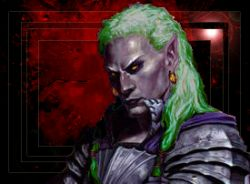

Nafein
Age : 150
Sexe : Homme
Race : Elfe
Faction : Alliance
Formation : Chasseur
Description : Nafein est un elfe de la nuit, sa démarche évoque celle d'un animal se déplaçant en forêt, ses long cheveux vert sont nouer en queu de cheval le plus souvent arrivent jusque a la moitié de son dos. Il a l'oeil vif et semble toujours prendre une vue d'esmble de son interlocuteur et de son environement... Tout dans ses aptitudes corporel, évoque l'animal pourtant quand il s'exprime, c'est d'une voix chaleureuse et posée. C'est derniers temps, naf a délaissé son étenelle armure d'écailles et son immense katana pour se promener torse nu et sans arme. Jamais loin de lui le suivant comme un Ombre, un immense sanglier, recouvert de pièces d'armure savement disposées, le suit, il répond au nom de Spasme. Au premier coup d'oeil on peut remarquer que nafein est un baroudeur, son équipement est patiné par les nombreux voyages, et ses muscles déveloper par la marche, et surrout la chasse...
Plus d'infos sur Nafein >>>Lire les 9 récits de Nafein >>>